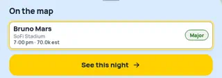
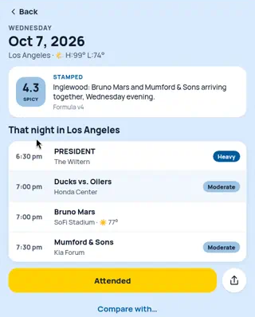

05 · Getting to an event page
An event page already exists live at /event/<id> (Ducks vs. Oilers: friction, crowd estimate, same-homestand strip, local-competition timeline). But nothing opens it. The map sheet button says "See this night" and goes to the date page, and ?event= links only tint one row so faintly it's hard to see. Also: tonight's events show "Attended" (and "Attend" on the event page) before they start, and "STAMPED" while the night is still a forecast.
Current11-concert-bruno-mars-selected-on-map.png · 10-date-page-la-ducks-regular-season.png (also 12, 13)
Map sheet (11)

Date page via ?event= Ducks (10)

The lock says the sheet button is "See this event" and opens the event page. The Ducks row is "highlighted" by a near-white tint. The gold button says Attended at 5 pm for a 7 pm game, and the card says STAMPED on a night that hasn't happened yet.
Option 1 · Wire the existing event pageSheet "See this event" → /event/<id> (cleaned up)
Ducks vs. Oilers
Honda Center · 7:00 pm
HockeyRoutine
Moderate friction
| Reason | Read | Why |
|---|
| Crowd fight | Moderate | Bruno Mars, same hours |
| Gridlock | Low example | Estimate · not live |
Forecast. It freezes into a stamp when the night ends.
~16,000
people (estimated)
Turns into "I was there" once the night is over.
Smallest change: rename the sheet button to "See this event" and point it (and ?event= links) at the page that already exists. On that page: occasion is a plain fact chip, not a blue pill; friction gets the two locked reasons in a small table; "Formula v4 · placeholder numbers until tuned" becomes plain "Forecast…"; one gold button, Save this night, which only becomes I was there after the night. The homestand strip and timeline stay below. example The Gridlock read is made up.
Option 2 · Row opens in place on the date page?event= expands the row; the full page is one tap further
FORECAST
Inglewood: Bruno Mars and Mumford & Sons arriving together.
That night in Los Angeles
7:00 pmDucks vs. Oilers
Honda Center
| Crowd | ~16,000 est · 17,174 seats |
| Up against | Bruno Mars, same hours |
| Occasion | Routine |
See this event ›
The link lands you on the night, with your event already open (blue edge, short facts, "See this event ›"). You get the context of the whole night and the detail together, which suits a log of nights. The card says FORECAST until the night ends. Header follows the lock ("Wed, Oct 7", read right, count under). Trade-off: two ways into one event. example "Light · 4/10" stands in for 4.3.